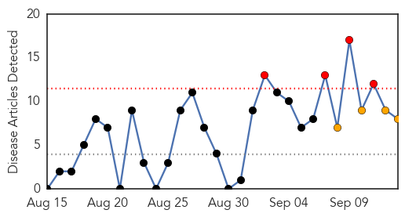
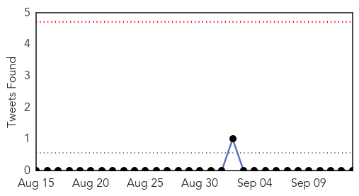
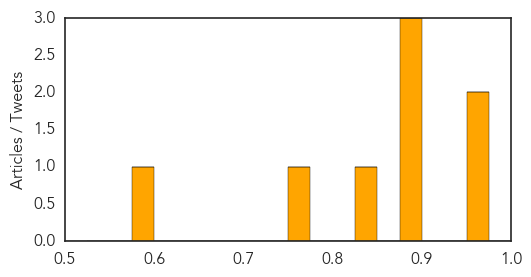

Toggle navigation
Early Warning
Daily Alerts
Dengue Fever
Sep 13, 2014
Compare to:
-
Hemmorhagic Fever
Mold/Fungal Infection
Influenza
Meningitis
Pertussis / Whooping Cough
Middle East Respiratory Syndrome
Cholera
Hepatitis
Chikungunya
Yellow Fever
Bubonic Plague
West Nile Virus
Swine Flu
Ebola
Measles
Unknown
Mumps
30 Day Trends
Web: 4
alerts
, 4
warnings
Twitter: 0
alerts
, 0
warnings
Top Articles:
0.961
Karachi at risk of Congo Epidemic
0.952
Serious Congo threat in Karachi: Experts for strict precautionary measures
0.898
Public health: Anti-dengue Day on Sunday
0.884
Conditions at Tata Steel plant blamed for dengue cases in Odisha
0.876
After floods, Srinagar now faces epidemic threat
0.833
Tata Steel plant blamed for hundreds of dengue cases in Odisha
0.752
Conditions at Tata Steel plant blamed for hundreds of dengue cases in Odisha
0.588
Cheques for flood victims
Top Tweets:
No tweets found for Sep 13, 2014
Web/News Articles

Tweets

Article Locations
Article Confidences
